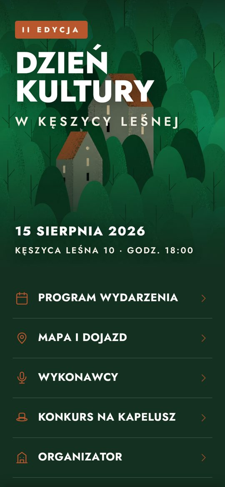
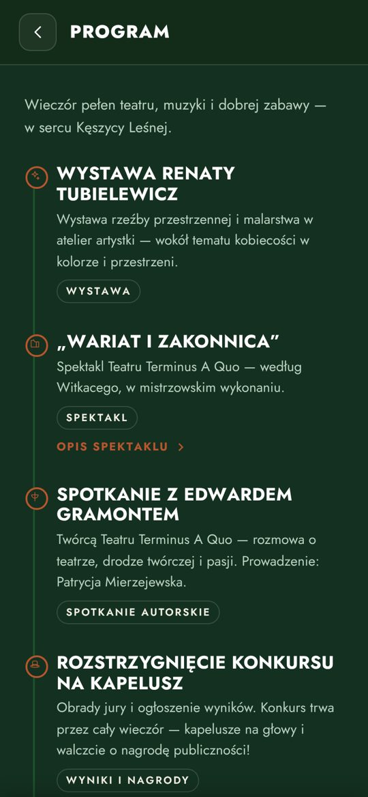
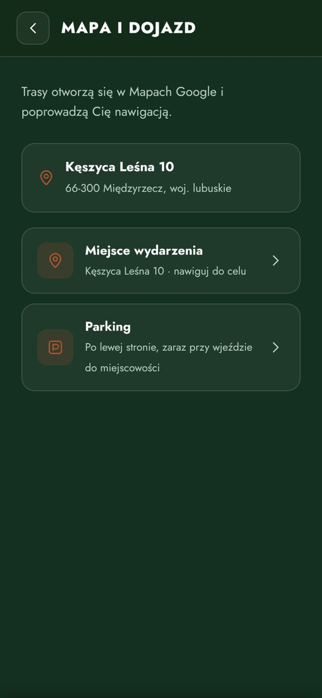
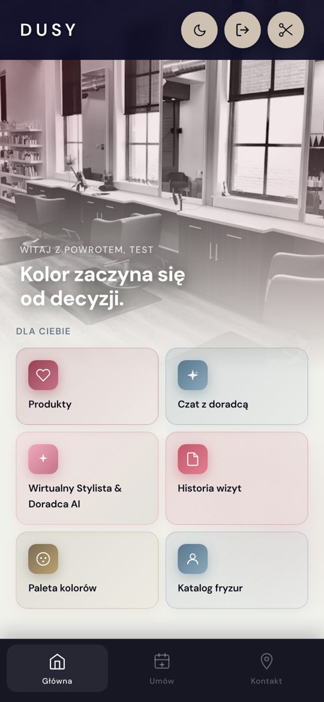
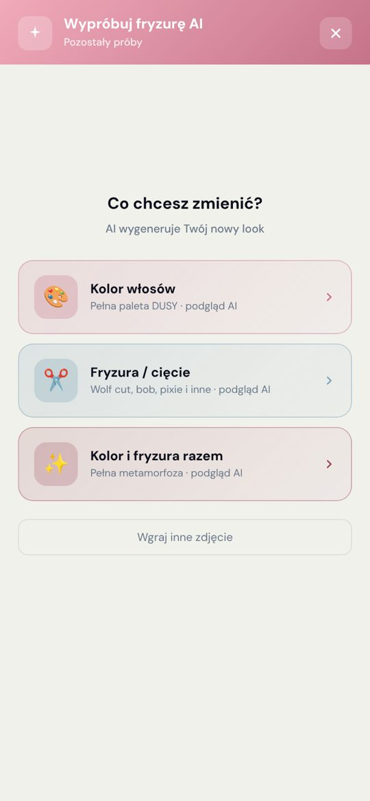
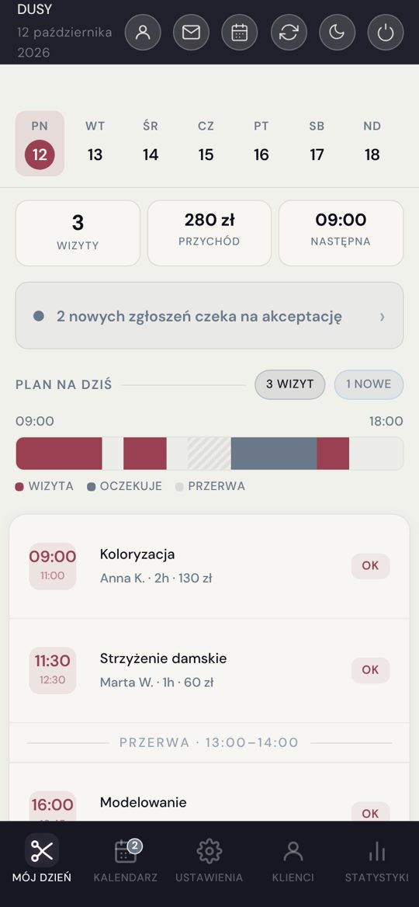

Wdrażam AI w firmach: od voicebotów po gotowe aplikacje. Od pomysłu do działającego wdrożenia.
Otwarta na zlecenia i etat zdalnyPracuję zdalnie · cała PolskaSenior AI Solution Specialist
Klienci, dla których zrealizowałam projekty.
- Sieć sklepów internetowych
- Dusy Professional
- Stowarzyszenie „Kęszyca Leśna Sobie i Sąsiadom”
Wybrane projekty



Dzień Kultury w Kęszycy Leśnej / aplikacja mobilna wydarzenia dla stowarzyszenia „Kęszyca Leśna Sobie i Sąsiadom”, otwierana kodem QR z plakatu
WydarzenieDziała offline



Dusy Professional / aplikacja salonu: rezerwacja wizyt, doradca AI i wirtualna przymiarka fryzury
SalonKalendarz GoogleWdrożona u klienta
Jak działa voicebot i panel · schemat uproszczony
- 1
Klient dzwonina infolinię sklepu
- 2
Centrala telefonicznaprzekazuje rozmowę botowi
Awaryjnie gdy bot nie działa, klient trafia od razu do konsultanta
- 3
Voicebot
Słuch mowa na tekst
Mózg model AI rozumie i układa odpowiedź
Głos tekst na mowę
Mózg korzysta z: instrukcji bazy wiedzy gotowych wypowiedzi narzędzi
Narzędzia sprawdzają status zamówienia, zwrotu i reklamacji
Konsultant przejmuje rozmowę, gdy bot nie może pomóc
- 4
Po rozmowiezapisują się transkrypcja z oceną AI, nagranie i szczegółowy log
- 5
Panel analitycznyhistoria rozmów, analiza i raporty, ustawienia botów, testy przed zmianą
Monitoring co kilka minut sprawdza boty i wysyła alert
- 6
Zmiany wracają do botaprompt i baza wiedzy działają od następnej rozmowy
Przykładowa rozmowa
KlientChciałbym sprawdzić, gdzie jest moja paczka.
MarcinJaki jest numer zamówienia?
KlientCztery, osiem, dwa, jeden, zero, siedem.
MarcinDziękuję. Zamówienie zostało dziś wysłane. Kurier doręczy je jutro.
Marcin, wirtualny asystent / voicebot obsługujący infolinie sklepów internetowych w 29 wariantach, zbudowany w dwuosobowym zespole ze specjalistą IT. Odpowiadam za część merytoryczną, testy i raportowanie, a architekturę rozwiązania znam od strony technicznej. Rozwiązanie zewnętrznego dostawcy osiągało ok. 27% skuteczności; zarekomendowałam budowę własnych systemów, które dziś osiągają 76–86% skuteczności, a ok. 40% spraw zamyka się w całości w trakcie rozmowy.
VoicebotyLiveKitCzęść merytorycznaTesty i raporty
Odpowiedzi na maile / AI klasyfikuje wiadomości, odpowiada na typowe zapytania, a sprawy wymagające decyzji przekazuje pracownikowi. Na co dzień utrzymuję i rozwijam automatyzację n8n obsługującą 11 rynków.
n8nGmailProjekt demonstracyjny
PyVerse / oprogramowanie dedykowane do pisania książek i poezji, z eksportem w formacie wydawniczym
Oprogramowanie dedykowaneiPhone i iPad
Voicebot Specialist Handbook / autorski podręcznik: 17 bloków tematycznych opisujących problematykę tworzenia voicebotów, z asystentem AI odpowiadającym na podstawie treści
O mnie
Z wykształcenia jestem AI Product Managerką, ale i historyczką sztuki, a przez siedem lat prowadziłam wegańską restaurację The ROOT we Wrocławiu – znam codzienność małej firmy od środka, dlatego wiem, które procesy warto zautomatyzować, żeby mieć więcej czasu dla klientów.
Zakres usług
KulturaTechnologia dla galerii i instytucji kultury
Łączę wykształcenie historyczki sztuki z wdrażaniem AI.
- Przewodniki i asystenci AI dla zwiedzających
- Aplikacje wystaw, festiwali i wydarzeń kulturalnych
- Porządkowanie i opis zbiorów z pomocą AI
- Strony i automatyzacje dla instytucji kultury
Wydarzenia i agencjeRozwiązania cyfrowe dla wydarzeń i kampanii
Realizacja w krótkim terminie, zgodna z identyfikacją wizualną wydarzenia lub marki.
- Aplikacje mobilne wydarzeń z dostępem przez kod QR
- Strony internetowe wydarzeń i kampanii
- Oprogramowanie dedykowane
- Uruchomienie i wsparcie na start dla małych organizatorów
Małe i średnie firmyAutomatyzacja kanałów kontaktu z klientem
AI obsługuje powtarzalne procesy i zapytania klientów, a sprawy wymagające decyzji trafiają do pracownika. Sama prowadziłam małą firmę, więc znam te potrzeby z praktyki.
- Voiceboty i czatboty obsługujące infolinię i stronę
- Rezerwacje stolików i odpowiedzi na pytania gości w restauracjach i kawiarniach
- Rezerwacja wizyt przez czat z integracją kalendarza
- Automatyczna obsługa poczty e-mail (n8n)
- Współpraca z działem IT klienta, a w małych firmach uruchomienie i wsparcie na start
Porozmawiajmy o współpracy.
- E-mail
- kornelia.czekaj@gmail.com
29voicebotów zbudowanych w dwuosobowym zespole
17bloków tematycznych o tworzeniu voicebotów
76–86%skuteczności voicebotów (wcześniej ok. 27%)
11rynków obsługiwanych przez automatyzację n8n
© 2026Strefa Twórcza